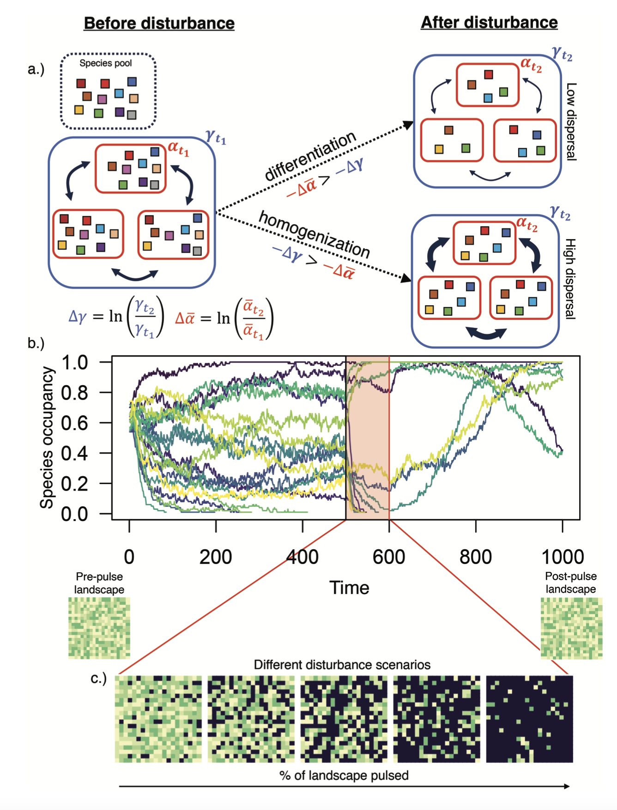
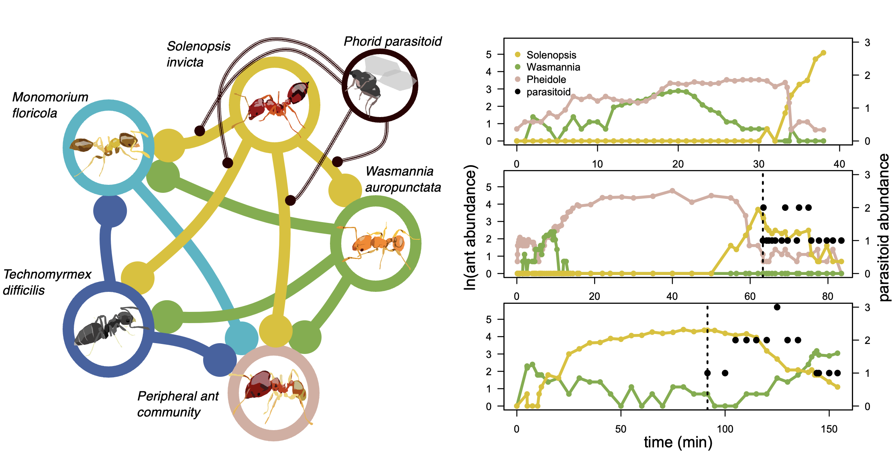
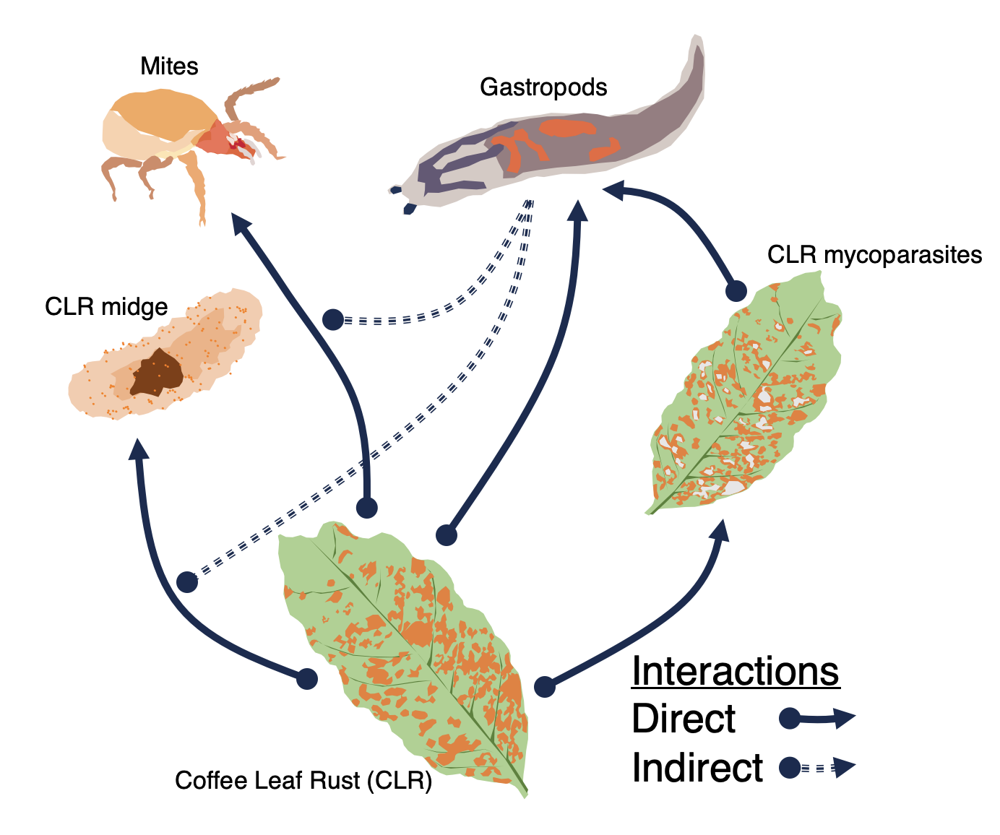
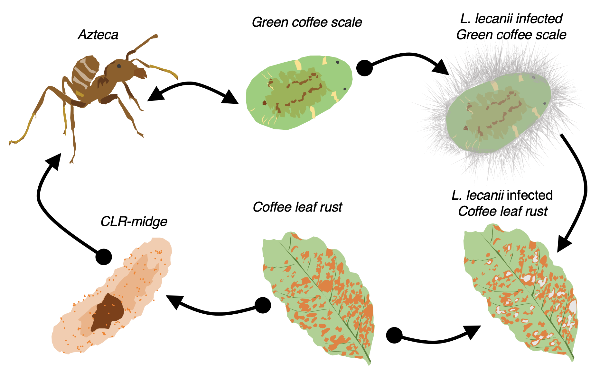

Research
My research program sits at the intersection of theoretical ecology, agroecology, and global change biology. I develop frameworks to understand how local processes scale up to shape community assembly and biodiversity patterns, and what those processes mean for how communities respond to global change. A priority throughout is connecting theory to natural history in systems where biodiversity has practical consequences.
Theory · Global Change Biology · Metacommunity Ecology
Metacommunity Theory and Multi-Scale Drivers of Biodiversity Change
Biodiversity is changing around the globe, yet communities can exhibit strikingly divergent responses to the same drivers. Why do some systems absorb disturbance and reorganize while others collapse? Under what conditions should we expect populations to respond positively to habitat fragmentation, and when should others be driven to extinction? My ongoing theoretical work suggests that local processes should be at the center of our attempts to understand these context-dependent outcomes. Species interactions and their population-level consequences are not details to be averaged over on the way to a macroecological description of biodiversity change. Rather, they provide the focal axes for understanding the divergent responses of communities to global change.
Current projects explore three interconnected questions: how local population dynamics shape coexistence in heterogeneous landscapes; how extinction thresholds and extinction debts scale from metapopulations to multi-species communities after habitat loss; and how scale-specific demographic processes determine when and whether biodiversity responds to regional drivers such as land-use change.

Disturbance interacts with dispersal to produce scale-dependent shifts in diversity. High dispersal leads to rapid recolonisation and regional homogenisation; limited dispersal amplifies local diversity loss and produces differentiation. From Hajian-Forooshani and Chase (2026), The American Naturalist.
Community Ecology · Coexistence Theory · Ecosystem Services
Coexistence and Community Assembly of Ant Communities in Agroecosystems
Much of my recent empirical work focuses on the population and community ecology of ants. Ants are a biodiverse group of animals that provide tractable systems for studying the complexity of species interactions — competition, mutualism, predation — and are critically important for ecosystem services such as nutrient cycling and biological control.

Field systems: a coffee-citrus farm in central Puerto Rico and an Italian olive grove, where ongoing work examines the multi-scale determinants of ant community structure and biological control.
Local interactions and coexistence
My work in Puerto Rico with long-time collaborators focuses on the local ecological mechanisms that maintain diversity within communities. Recent work has highlighted the interplay of higher-order interactions and intransitive competition in promoting coexistence in arboreal ants on citrus trees in a coffee-citrus farm. I show that pairwise competitive interactions alone fail to recreate observed community dynamics, and that a higher-order interaction imposed by a parasitoid of the dominant species reorganizes the competitive network. This provides a concrete empirical example of the ecological mechanisms behind theoretically predicted coexistence-promoting effects of higher-order interactions.

Competitive interaction network among ant species in a Puerto Rican coffee agroecosystem, with a phorid parasitoid imposing higher-order effects on the dominant species (left). Time series of ant abundance illustrating temporal shifts between dominance regimes (right). From Hajian-Forooshani et al. (in revision), Ecology Letters.
Regional determinants of community assembly
Ongoing work applies metacommunity theory to understand how heterogeneous landscapes shape ant biodiversity patterns in agroecosystems. This work relies on a detailed understanding of community interactions and natural history to make predictions about community responses to regional land use patterns. It builds on ongoing work in Puerto Rican coffee landscapes and is being extended to olive agroecosystems in Florence, Italy.
Disease Ecology · Biological Control · Agroecology
The Community Ecology of the Coffee Leaf Rust
Coffee agroecosystems in Puerto Rico and southern Mexico have been the empirical backbone of my research for over a decade. Coffee leaf rust (Hemileia vastatrix), one of the most devastating fungal pathogens of any crop, provides a tractable model system in which to study the ecological determinants of biological control and disease dynamics. These systems are exceptional natural laboratories: structurally complex, ecologically dynamic, and deeply important to the livelihoods of millions of farmers.
My work focuses on the spatial ecology of pathogen dynamics and the community of natural enemies that consume the rust. A comparative approach between Puerto Rico and Mexico asks whether differences in ecological community composition between the two regions can explain their strikingly distinct pathogen dynamics. Much of this work also reflects a coupling of natural history and field work with a desire to apply ecological theory to issues of practical importance.


The natural enemy community of CLR spans multiple trophic levels and interaction types. Direct and indirect pathways together determine the net suppressive effect on the pathogen.

The Azteca ant tends green coffee scale, which harbours the fungal pathogen Lecanicillium lecanii. This same fungus attacks CLR, creating an indirect cascade linking ant behaviour to rust suppression.